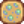

Vino
| Vino | |||||||||||||||||
| Bebe con moderación. | |||||||||||||||||
| Información | |||||||||||||||||
| Origen | Productos artesanales | ||||||||||||||||
| Mejora |  Un poco alegre |
||||||||||||||||
| Duración de mejora | |||||||||||||||||
| Energía / Salud |
|
||||||||||||||||
|
|||||||||||||||||
| Productos Artesanales | |||||||||||||||||
| Máquina | |||||||||||||||||
| Tiempo de artesanía | |||||||||||||||||
| Ingredientes | Cualquier fruta (1) | ||||||||||||||||
El vino es un producto artesanal producido en el barril, necesita 7 días de procesado. Puede ser obtenido como regalo en la Fiesta de la estrella de invierno.
El precio de venta depende de la fruta usada (3 × valor base de la fruta). Cuando se consume, te produce borrachera, la cual disminuye tu velocidad en 1. El efecto curativo del vino es el mismo sin importar la fruta que se haya procesado.
Nota: Es posible conseguir vino que no sea de ninguna fruta (del carro ambulante o de la estatua de la fortuna eterna). Será un simple objeto llamado "vino" que se podrá vender por  400o (o
400o (o  560o con la profesión artesano).
560o con la profesión artesano).
Valor por añejamiento
El vino puede ser colocado dentro de un tonel para añejarlo desde calidad normal a calidad plata, oro, y, eventualmente, iridio. La calidad de iridio dobla el valor de precio de venta base del vino.
El vino toma el tiempo más largo de añejo en un tonel que cualquier otro objeto. Toma 2 estaciones de añejo para convertirse desde la calidad normal hasta la calidad iridio.
La calidad normal, plata, y oro del vino puede ser prematuramente obtenida golpeando el tonel con un pico, azada, o hacha.
| Calidad base | Calidad plata (x 1.25) | Calidad oro (x 1.5) | Calidad iridio (x 2) | ||||||||
|---|---|---|---|---|---|---|---|---|---|---|---|
|
|
Total: 28 días |
Total: 56 días |
Regalos
| Reacciones de Aldeanos
| |
|---|---|
| Le encanta | |
| Le gusta | |
| Odia | |
Lotes
Se necesita para el  Lote Encantador en el Tablón de anuncios.
Lote Encantador en el Tablón de anuncios.
Misiones
No se necesita para ninguna misión.
Trivia
Cuando se compra el vino del carro ambulante o es obtenido por medio de la estatua de la fortuna eterna, no será de ningun fruta en específico, y será vendido por  400o (o
400o (o  560o con la profesión artesano).
560o con la profesión artesano).